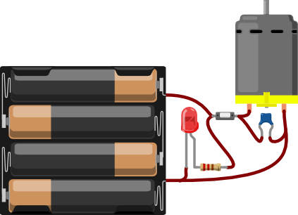
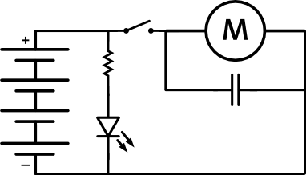
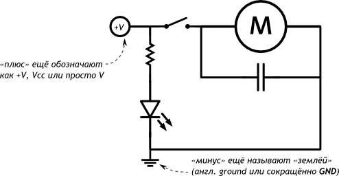
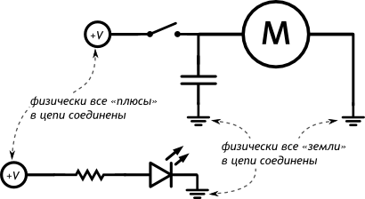

Принципиальные схемы
Чтобы изобразить на бумаге как должна выглядеть та или иная электрическая цепь используют схемы. Схемы бывают разных видов со своими преимуществами и недостатками.
Ниже приведена одна и та же электрическая схема, изображённая по-разному, в четырёх вариациях.
Рисованная схема
Красиво, но громоздко и непрактично:
Принципиальная схема
Компактно и наглядно:
-то, что соединено линией, в реальности должно быть соединено проводником
-то, что не соединено линией, в реальности должно быть электрически изолировано
Принципиальная схема без явного источника питания
Источник питания зачастую не рисуют в явном виде, а используют отдельные символы для плюса и минуса. Такая схема ещё более компактна.
Принципиальная схема с отдельными контурами
Часто для удобства одну цепь на схемах разбивают на отдельные части. В сложных проектах так добиваются наглядности и делят зоны ответственности между несколькими инженерами-разработчиками.
